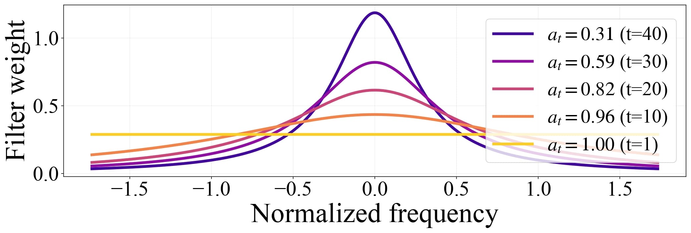
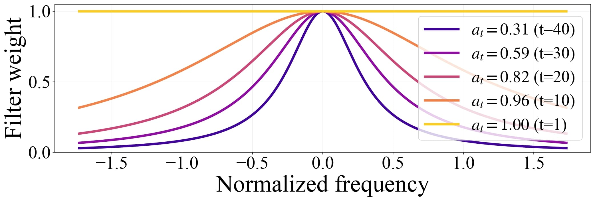
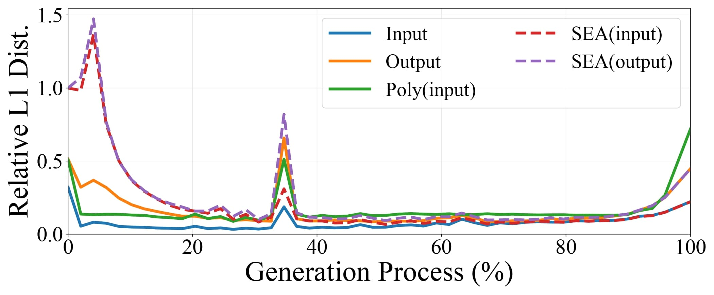
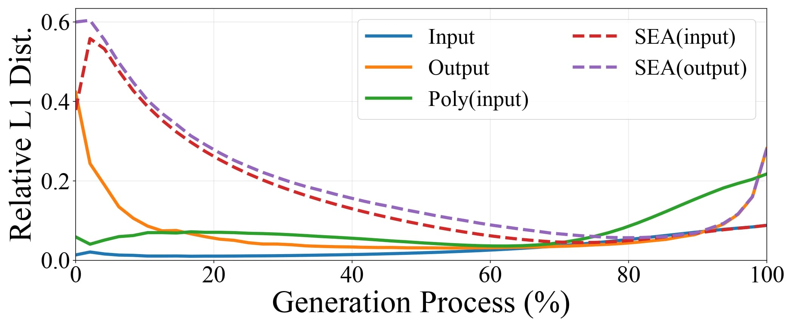

To design a filter that reflects spectral evolution, we formalize the change of the effective frequency band across timesteps.
By deriving an optimal linear denoiser, we propose a Spectral-Evolution-Aware (SEA) filter that effectively preserves content-relevant components while suppressing noise.
The visualization of the SEA filter is presented below.

Optimal linear denoising filter for different \(t\)

Noramlized SEA filter for different \(t\)
Spectrum-Aware Dynamic Caching
Directly using SEA-filtered outputs in the cache metric is not practical, since the output is only available after a full denoiser run and thus offers no speedup. We therefore seek an input-side proxy that matches the SEA-filtered output distance as closely as possible. Building on the input features, introduced in SeaCache, we compare several candidates: raw input, raw output, the polynomial fitted input used in TeaCache, and their SEA-filtered counterparts obtained by applying from the proposed method.
Below figure reports the relative \(\ell_1\) distance between consecutive timesteps for these feature choices, averaged over ten samples on FLUX and Wan2.1 1.3B. The SEA-filtered input distances closely follow the SEA-filtered output distances along the entire trajectory, while raw input and polynomial fitted input show weaker alignment, especially at early timesteps.

Rel \(\ell_1\) across the gen process on FLUX

Rel \(\ell_1\) across the gen process on Wan2.1 1.3B
Given input features \(I_t\) and \(I_{t+1}\), SeaCache first applies FFT, multiplies by the timestep-dependent SEA filters \(G_t^{\mathrm{norm}}\) and \(G_{t+1}^{\mathrm{norm}}\), and then applies iFFT to obtain spectral-evolution-aware features \(\mathcal{P}(G_t^{\mathrm{norm}}, I_t)\) and \(\mathcal{P}(G_{t+1}^{\mathrm{norm}}, I_{t+1})\).
A spectrum-aware dynamic caching module measures the relative distance \(\widetilde{\Delta}_t\) between consecutive filtered features, accumulates it over timesteps, and either reuses the cached output or refreshes the denoiser when the threshold \(\delta\) is exceeded.
The underlying diffusion model remains unchanged, so SeaCache acts as a plug-and-play cache policy that replaces only the distance metric.